MediQzy Hospital OS — kiosk & display flowcharts
Generated from MEDIQZY_HOSPITAL_OS_WORKFLOW_CHARTS.md. Insert PNG/SVG into Word or PowerPoint.
01-platform-layers
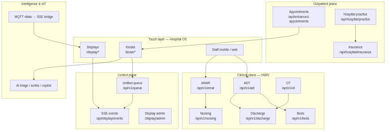
02-patient-entry-paths
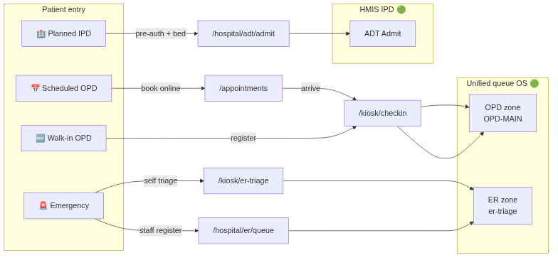
03-master-journey-admission-discharge
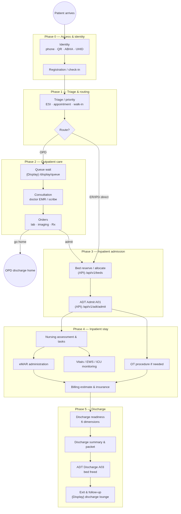
04-scheduled-opd-sequence
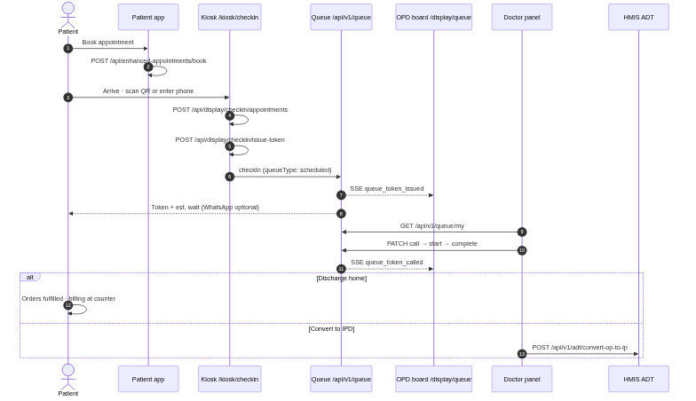
05-walk-in-opd
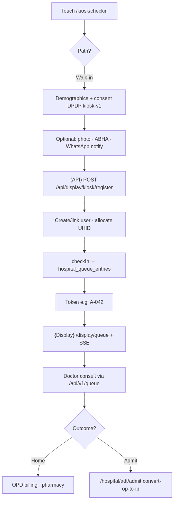
06-emergency-triage
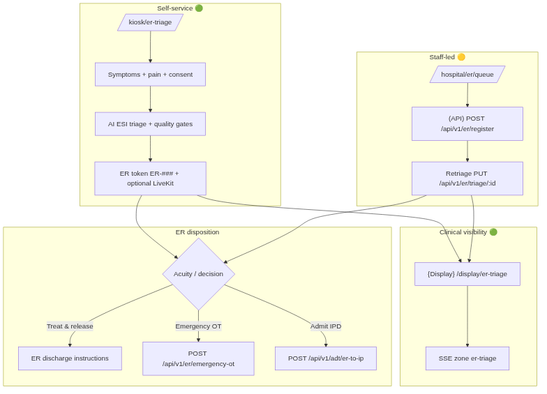
07-ipd-admission
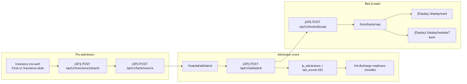
08-inpatient-stay
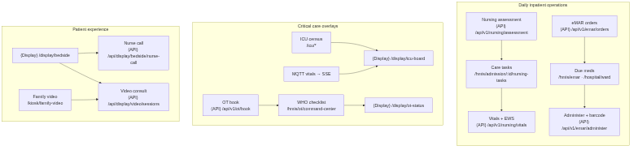
09-discharge-readiness
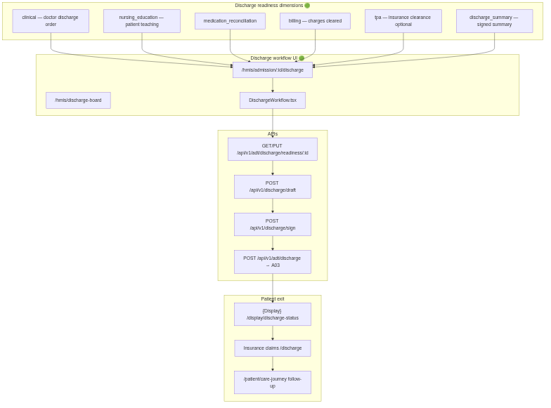
10-department-operations
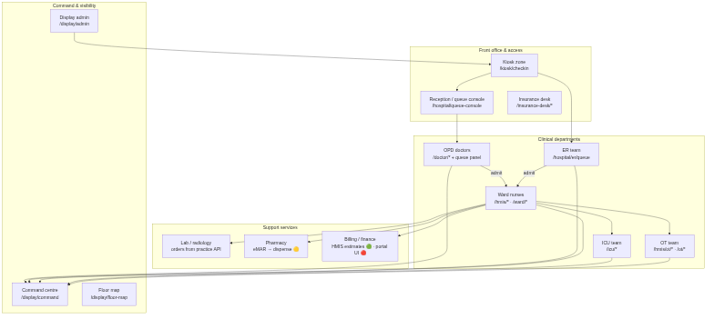
11-queue-state-machine
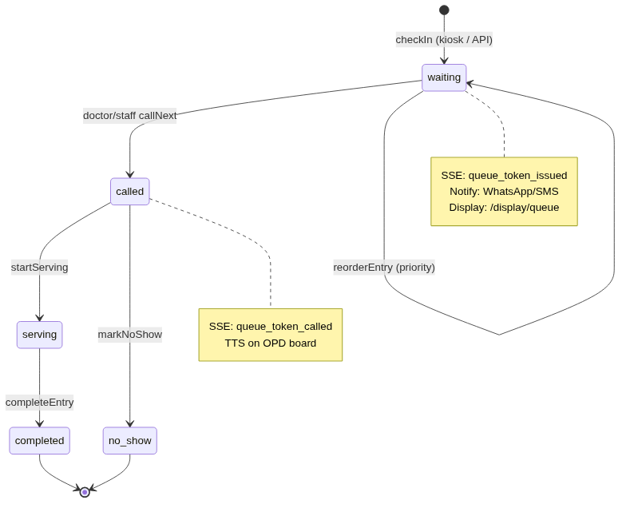
12-adt-timeline
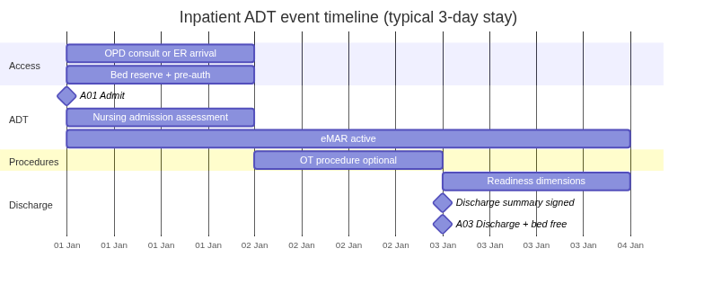
13-display-touchpoints-floor
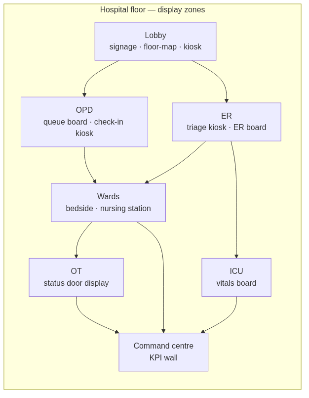
14-insurance-billing-overlay
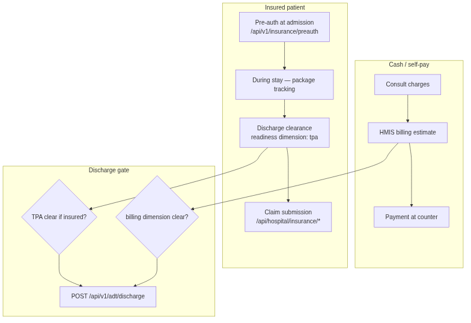
15-elective-surgery-journey
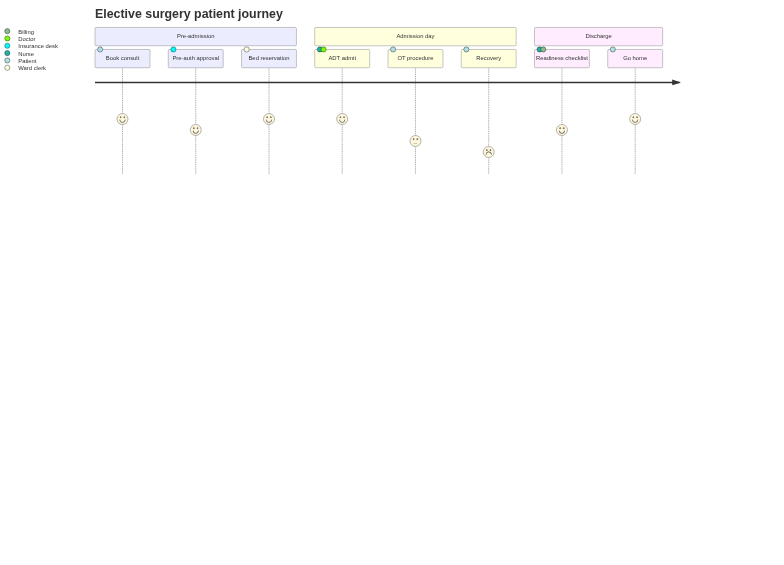